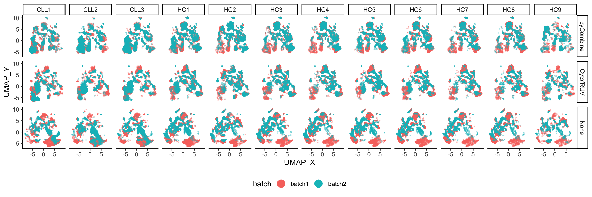

Mitigating Batch Effects in the Integration of Multi-Batch Cytometry Data at the Supercell Level
Givanna Putri
2023-05-24
Last updated: 2023-08-15
Checks: 7 0
Knit directory: SuperCellCyto-analysis/
This reproducible R Markdown analysis was created with workflowr (version 1.7.0). The Checks tab describes the reproducibility checks that were applied when the results were created. The Past versions tab lists the development history.
Great! Since the R Markdown file has been committed to the Git repository, you know the exact version of the code that produced these results.
Great job! The global environment was empty. Objects defined in the global environment can affect the analysis in your R Markdown file in unknown ways. For reproduciblity it’s best to always run the code in an empty environment.
The command set.seed(42) was run prior to running the
code in the R Markdown file. Setting a seed ensures that any results
that rely on randomness, e.g. subsampling or permutations, are
reproducible.
Great job! Recording the operating system, R version, and package versions is critical for reproducibility.
Nice! There were no cached chunks for this analysis, so you can be confident that you successfully produced the results during this run.
Great job! Using relative paths to the files within your workflowr project makes it easier to run your code on other machines.
Great! You are using Git for version control. Tracking code development and connecting the code version to the results is critical for reproducibility.
The results in this page were generated with repository version 7baf7b7. See the Past versions tab to see a history of the changes made to the R Markdown and HTML files.
Note that you need to be careful to ensure that all relevant files for
the analysis have been committed to Git prior to generating the results
(you can use wflow_publish or
wflow_git_commit). workflowr only checks the R Markdown
file, but you know if there are other scripts or data files that it
depends on. Below is the status of the Git repository when the results
were generated:
Ignored files:
Ignored: .DS_Store
Ignored: .Rhistory
Ignored: .Rproj.user/
Ignored: analysis/.DS_Store
Ignored: code/.DS_Store
Ignored: code/b_cell_identification/.DS_Store
Ignored: code/batch_correction/.DS_Store
Ignored: code/explore_supercell_purity_clustering/.DS_Store
Ignored: code/explore_supercell_purity_clustering/functions/.DS_Store
Ignored: code/explore_supercell_purity_clustering/louvain_all_cells/.DS_Store
Ignored: code/label_transfer/.Rhistory
Ignored: data/.DS_Store
Ignored: data/bodenmiller_cytof/
Ignored: data/explore_supercell_purity_clustering/
Ignored: data/haas_bm/
Ignored: data/oetjen_bm_dataset/
Ignored: data/trussart_cytofruv/
Ignored: output/.DS_Store
Ignored: output/bodenmiller_cytof/
Ignored: output/explore_supercell_purity_clustering/
Ignored: output/label_transfer/
Ignored: output/oetjen_b_cell_panel/
Ignored: output/trussart_cytofruv/
Untracked files:
Untracked: Factor plot - Gated_Population - plotted on UMAP_X by UMAP_Y.png
Untracked: code/b_cell_identification/cluster_singlecell.R
Untracked: code/b_cell_identification/rescale_supercell.R
Untracked: code/b_cell_identification/runtime_benchmark/
Untracked: code/batch_correction/benchmark_cycombine.R
Untracked: code/batch_correction/rescale_supercell.R
Untracked: code/batch_correction/runtime_benchmark/
Untracked: code/bodenmiller_data/benchmark_supercell_runtime.R
Untracked: code/compare_da_test_runtime.R
Untracked: code/krieg_melanoma/
Untracked: code/label_transfer/harmony_knn_singlecell.R
Untracked: code/label_transfer/seurat_rpca_singlecell.R
Untracked: data.tar.gz
Untracked: output/krieg_melanoma/
Untracked: run_time_v1.Rmd
Unstaged changes:
Modified: SuperCellCyto-analysis.Rproj
Modified: code/batch_correction/run_batch_correction_supercells.R
Modified: code/label_transfer/harmony_knn.R
Modified: code/label_transfer/seurat_rpca.R
Note that any generated files, e.g. HTML, png, CSS, etc., are not included in this status report because it is ok for generated content to have uncommitted changes.
These are the previous versions of the repository in which changes were
made to the R Markdown (analysis/batch_correction.Rmd) and
HTML (docs/batch_correction.html) files. If you’ve
configured a remote Git repository (see ?wflow_git_remote),
click on the hyperlinks in the table below to view the files as they
were in that past version.
| File | Version | Author | Date | Message |
|---|---|---|---|---|
| html | a55c3ba | Givanna Putri | 2023-07-28 | Build site. |
| html | 366514e | Givanna Putri | 2023-07-28 | Build site. |
| Rmd | 402358b | Givanna Putri | 2023-07-28 | wflow_publish(c("analysis/*Rmd")) |
Introduction
In the analysis, we explore the potential for reducing batch effects at the supercell level. We employed 2 different batch correction methodologies for this purpose: CytofRUV (Trussart et al. 2020) and cyCombine (Pedersen et al. 2022).
The dataset used in this analysis originates from the CytofRUV study. It consists of Peripheral Blood Mononuclear Cell (PBMC) samples from 3 Chronic Lymphocytic Leukaemia (CLL) patients and 9 Healthy Controls (HC). Each patient’s sample was duplicated across two batches, with each batch comprising 12 samples, totaling 24 samples. All samples were stained with a 31-antibody panel, targeting 19 lineage markers and 12 functional proteins, and subsequently quantified using Cytof. The complete list of the antibodies used can be found in the CytofRUV manuscript (Trussart et al. 2020).
For this analysis, we employed the following steps. First, we
downloaded the raw FCS files from FlowRepository FR-FCM-Z2L2.
Following this, the data pre-processed using the R script provided with
the CytofRUV manuscript (the script is accessible in
code/batch_correction/prepare_data.R). Once the
pre-processing was completed, we generated supercells using
SuperCellCyto (R script is available in
code/batch_correction/run_supercell.R). Subsequently, we
applied CytofRUV and cyCombine to the supercells. Scripts facilitating
these corrections are available in
code/batch_correction/run_batch_correction_supercells.R.
The findings reported here represent the results following the application of SuperCellCyto and batch correction methods.
Load libraries
library(here)
library(data.table)
library(limma)
library(ggplot2)
library(ggrepel)
library(Spectre)
library(pheatmap)
library(scales)
library(ggpubr)
library(RColorBrewer)
library(ggridges)Load data
Sample metadata.
sample_metadata <- fread(here("data", "trussart_cytofruv", "metadata", "Metadata.csv"))Markers.
panel_info <- fread(here("data", "trussart_cytofruv", "metadata", "Panel.csv"))
panel_info[, reporter_marker := paste(fcs_colname, antigen, "asinh", "cf5", sep = "_")]
markers <- panel_info$reporter_marker
cell_type_markers <- panel_info[panel_info$marker_class == "type"]$reporter_markerAll cells.
cell_dat <- fread(here("output", "trussart_cytofruv", "20230515_supercell_out", "cell_dat_asinh.csv"))
# Remove the untransformed markers as these are useless
cell_dat <- cell_dat[, c(32:68)]
cell_dat[, batch := factor(paste0("batch", batch))]Uncorrected supercells.
supercell_exp_mat <- fread(here("output", "trussart_cytofruv", "20230524", "supercellExpMat_rep1_umap.csv"))
supercell_exp_mat[, batch := factor(paste0("batch", batch))]Corrected supercells.
batch_corrected_supercells <- list()
batch_corrected_supercells[["CytofRUV"]] <- fread(here("output", "trussart_cytofruv", "20230524", "supercellExpMat_postCytofRUV.csv"))
batch_corrected_supercells[["CytofRUV"]][, batch := factor(paste0("batch", batch))]
batch_corrected_supercells[["cyCombine"]] <- fread(here("output", "trussart_cytofruv", "20230704", "supercellExpMat_postCycombine.csv"))
batch_corrected_supercells[["cyCombine"]][, batch := paste0("batch", batch)]
setnames(batch_corrected_supercells$cyCombine, "sample", "sample_id")Assess batch correction result
MDS plot
We evaluate the performance of the batch correction approaches by generating MDS plots.
mds_plots <- list()
mds_plots[[1]] <- make.mds.plot(
dat = cell_dat,
sample_col = "sample_id",
markers = markers,
colour_by = "batch",
font_size = 2
) + labs(title = "Uncorrected cells", colour = "Batch") +
scale_color_manual(values = c("batch1" = "#0047AB", "batch2" = "#DC143C"))
mds_plots[[2]] <- make.mds.plot(
dat = supercell_exp_mat,
sample_col = "sample_id",
markers = markers,
colour_by = "batch",
font_size = 2
) + labs(title = "Uncorrected supercells", colour = "Batch") +
scale_color_manual(values = c("batch1" = "#0047AB", "batch2" = "#DC143C"))
mds_plots[[3]] <- make.mds.plot(
dat = batch_corrected_supercells$CytofRUV,
sample_col = "sample_id",
markers = markers,
colour_by = "batch",
font_size = 2
) + labs(title = "CytofRUV corrected supercells", colour = "Batch") +
scale_color_manual(values = c("batch1" = "#0047AB", "batch2" = "#DC143C"))
mds_plots[[4]] <- make.mds.plot(
dat = batch_corrected_supercells$cyCombine,
sample_col = "sample_id",
markers = markers,
colour_by = "batch",
font_size = 2
) + labs(title = "cyCombine corrected supercells", colour = "Batch") +
scale_color_manual(values = c("batch1" = "#0047AB", "batch2" = "#DC143C"))ggarrange(plotlist = mds_plots, ncol = 2, nrow = 2, common.legend = TRUE, legend = "bottom")
| Version | Author | Date |
|---|---|---|
| 366514e | Givanna Putri | 2023-07-28 |
In the MDS plots of uncorrected supercells, the 1st dimension separates the CLL samples from the HC samples, while the 2nd dimension separates the two batches. After applying batch correction methods, the separation of CLL and HC samples are maintained along the 1st dimension. However, the 2nd dimension, post-correction, no longer separate the batches.
UMAP plot
Complementing the MDS plots, we will also the UMAP plots of the supercells coloured by the batches.
umap_plt_dat <- rbind(
batch_corrected_supercells$CytofRUV[, c("UMAP_X", "UMAP_Y", "batch", "patient_id")],
batch_corrected_supercells$cyCombine[, c("UMAP_X", "UMAP_Y", "batch", "patient_id")],
supercell_exp_mat[, c("UMAP_X", "UMAP_Y", "batch", "patient_id")]
)
umap_plt_dat$correction <- c(
rep("CytofRUV", nrow(batch_corrected_supercells$CytofRUV)),
rep("cyCombine", nrow(batch_corrected_supercells$cyCombine)),
rep("None", nrow(supercell_exp_mat))
)
ggplot(umap_plt_dat, aes(x = UMAP_X, y = UMAP_Y, colour = batch)) +
geom_point(size = 0.3, alpha = 0.3) +
facet_grid(cols = vars(patient_id), rows = vars(correction)) +
scale_color_manual(values = c("batch1" = "#F8766D", "batch2" = "#00BFC4")) +
theme_classic() +
guides(colour = guide_legend(override.aes = list(size = 5, alpha = 1))) +
theme(legend.position = "bottom")
| Version | Author | Date |
|---|---|---|
| 366514e | Givanna Putri | 2023-07-28 |
The UMAP plots demonstrate that following batch correction, supercells from different batches overlap more so compared to those that are not corrected, further indicating the effective reduction of batch effect.
Computing Earth Mover Distance
The Earth Mover’s Distance (EMD) metric is often employed to measure the efficacy of batch effect correction algorithm. It can be applied to each marker to measure the dissimilarity in their distributions across multiple batches. Following successful batch correction, the EMD score for any marker is expected to decrease.
To assess the effectiveness of CytofRUV and cyCombine, for each paired sample (indicated by the patient_id), we obtain distribution of each marker, by binning the data into bins of size 0.1, from either all cells or supercells. Thereafter, for each marker we calculate EMD comparing the distribution between the paired sample.
calc_emd <- function(dat, markers, patient_ids) {
emd_dist <- lapply(patient_ids, function(pid) {
emd_per_marker <- lapply(markers, function(marker) {
exp <- dat[patient_id == pid, c("batch", marker), with = FALSE]
hist_bins <- lapply(c("batch1", "batch2"), function(bat_id) {
exp_bat <- exp[batch == bat_id, ][[marker]]
as.matrix(graphics::hist(exp_bat, breaks = seq(-100, 100, by = 0.1), plot = FALSE)$counts)
})
emdist::emd2d(hist_bins[[1]], hist_bins[[2]])
})
emd_per_marker <- data.table(
marker = markers,
emd = unlist(emd_per_marker),
patient_id = pid
)
return(emd_per_marker)
})
emd_dist <- rbindlist(emd_dist)
return(emd_dist)
}Calculate EMDs.
patient_ids <- unique(supercell_exp_mat$patient_id)
emd_uncorrected <- calc_emd(supercell_exp_mat, markers, patient_ids)
emd_cytofruv <- calc_emd(batch_corrected_supercells$CytofRUV, markers, patient_ids)
emd_cycombine <- calc_emd(batch_corrected_supercells$cyCombine, markers, patient_ids)
emd_dist <- rbindlist(list(emd_uncorrected, emd_cytofruv, emd_cycombine))
emd_dist[, correction := c(
rep("Uncorrected supercells", nrow(emd_uncorrected)),
rep("CytofRUV", nrow(emd_cytofruv)),
rep("cyCombine", nrow(emd_cycombine))
)]
emd_dist[, emd_rounded := round(emd, digits = 4)]
emd_dist[, sqrt_emd := sqrt(emd_rounded)]ggplot(emd_dist, aes(x = patient_id, y = sqrt_emd, colour = correction)) +
geom_boxplot(outlier.size = 0.7) +
theme_classic() +
scale_color_manual(values = c(
"CytofRUV" = "#FFAA33",
"cyCombine" = "#0047AB",
"Uncorrected supercells" = "#A9A9A9"
)) +
labs(
y = "Square Root of EMD", x = "Patient ID", colour = "Batch Correction Method",
title = "Comparison of EMD Across Corrected and Uncorrected Supercells",
subtitle = "EMD: Earth Mover Distance"
) +
scale_y_continuous(breaks = pretty_breaks(n = 10))
| Version | Author | Date |
|---|---|---|
| 366514e | Givanna Putri | 2023-07-28 |
In general, for all methods, we see a reduction in EMD score.
Compare the distribution of the markers
Just between the uncorrected and corrected supercells.
all_data <- list(
CytofRUV = batch_corrected_supercells$CytofRUV,
cyCombine = batch_corrected_supercells$cyCombine,
uncorrected = supercell_exp_mat
)
all_data <- rbindlist(all_data, idcol = "correction", fill = TRUE)
all_data <- all_data[, c(markers, "batch", "correction"), with = FALSE]
all_data <- melt(all_data, id.vars = c("batch", "correction"))
all_data[, variable := gsub("^[^_]*_", "", gsub("_asinh_cf5", "", variable))]Plot the distribution for CD14, CD45RA, and PUMA for the main figure.
subset_marker_dist <- all_data[variable %in% c("CD14", "CD45RA", "PUMA"), ]
# for ordering the panels
subset_marker_dist[, correction := factor(correction, levels = c("uncorrected", "CytofRUV", "cyCombine"))]
ggplot(subset_marker_dist, aes(x = value, y = batch)) +
geom_density_ridges(aes(fill = correction, color = correction), alpha = 0.3) +
facet_grid(rows = vars(variable), cols = vars(correction)) +
theme_ridges() +
theme(strip.text.x = element_text(margin = margin(b = 3))) +
scale_fill_manual(values = c("uncorrected" = "#F8766D", "CytofRUV" = "#00BFC4", "cyCombine" = "#7CAE00")) +
scale_color_manual(values = c("uncorrected" = "#F8766D", "CytofRUV" = "#00BFC4", "cyCombine" = "#7CAE00")) +
labs(x = "Marker Expression", y = "Batch", title = "Distribution of Marker Expression")
| Version | Author | Date |
|---|---|---|
| 366514e | Givanna Putri | 2023-07-28 |
Plot the rest of the distribution out.
marker_dist <- all_data[!variable %in% c("CD14", "CD45RA", "PUMA"), ]
marker_dist[, correction := factor(correction, levels = c("uncorrected", "CytofRUV", "cyCombine"))]
ggplot(marker_dist, aes(x = value, y = batch)) +
geom_density_ridges(aes(fill = correction, color = correction), alpha = 0.3) +
facet_grid(rows = vars(variable), cols = vars(correction)) +
theme_ridges() +
theme(strip.text.x = element_text(margin = margin(b = 3)), strip.text.y = element_text(margin = margin(b = 3))) +
scale_fill_manual(values = c("uncorrected" = "#F8766D", "CytofRUV" = "#00BFC4", "cyCombine" = "#7CAE00")) +
scale_color_manual(values = c("uncorrected" = "#F8766D", "CytofRUV" = "#00BFC4", "cyCombine" = "#7CAE00")) +
labs(x = "Marker Expression", y = "Batch", title = "Distribution of Marker Expression")
| Version | Author | Date |
|---|---|---|
| 366514e | Givanna Putri | 2023-07-28 |
References
sessionInfo()R version 4.2.3 (2023-03-15)
Platform: aarch64-apple-darwin20 (64-bit)
Running under: macOS Monterey 12.6
Matrix products: default
BLAS: /Library/Frameworks/R.framework/Versions/4.2-arm64/Resources/lib/libRblas.0.dylib
LAPACK: /Library/Frameworks/R.framework/Versions/4.2-arm64/Resources/lib/libRlapack.dylib
locale:
[1] en_US.UTF-8/en_US.UTF-8/en_US.UTF-8/C/en_US.UTF-8/en_US.UTF-8
attached base packages:
[1] stats graphics grDevices utils datasets methods base
other attached packages:
[1] ggridges_0.5.4 RColorBrewer_1.1-3 ggpubr_0.6.0 scales_1.2.1
[5] pheatmap_1.0.12 Spectre_1.0.0-0 ggrepel_0.9.3 ggplot2_3.4.1
[9] limma_3.54.1 data.table_1.14.8 here_1.0.1 workflowr_1.7.0
loaded via a namespace (and not attached):
[1] backports_1.4.1 plyr_1.8.8
[3] igraph_1.4.0 lazyeval_0.2.2
[5] sp_1.6-0 splines_4.2.3
[7] flowCore_2.10.0 listenv_0.9.0
[9] scattermore_0.8 GenomeInfoDb_1.34.9
[11] digest_0.6.31 htmltools_0.5.4
[13] viridis_0.6.2 fansi_1.0.4
[15] magrittr_2.0.3 tensor_1.5
[17] cluster_2.1.4 ROCR_1.0-11
[19] globals_0.16.2 matrixStats_0.63.0
[21] cytolib_2.10.0 spatstat.sparse_3.0-0
[23] colorspace_2.1-0 xfun_0.39
[25] dplyr_1.1.0 callr_3.7.3
[27] RCurl_1.98-1.10 jsonlite_1.8.4
[29] progressr_0.13.0 spatstat.data_3.0-0
[31] survival_3.5-3 zoo_1.8-11
[33] glue_1.6.2 polyclip_1.10-4
[35] gtable_0.3.1 zlibbioc_1.44.0
[37] XVector_0.38.0 leiden_0.4.3
[39] DelayedArray_0.24.0 car_3.1-1
[41] future.apply_1.10.0 SingleCellExperiment_1.20.0
[43] BiocGenerics_0.44.0 abind_1.4-5
[45] DBI_1.1.3 rstatix_0.7.2
[47] spatstat.random_3.1-3 miniUI_0.1.1.1
[49] Rcpp_1.0.10 viridisLite_0.4.1
[51] xtable_1.8-4 reticulate_1.28
[53] rsvd_1.0.5 stats4_4.2.3
[55] htmlwidgets_1.6.1 httr_1.4.4
[57] ellipsis_0.3.2 Seurat_4.3.0
[59] ica_1.0-3 farver_2.1.1
[61] pkgconfig_2.0.3 sass_0.4.5
[63] uwot_0.1.14 deldir_1.0-6
[65] utf8_1.2.3 labeling_0.4.2
[67] tidyselect_1.2.0 rlang_1.0.6
[69] reshape2_1.4.4 later_1.3.0
[71] munsell_0.5.0 tools_4.2.3
[73] cachem_1.0.6 cli_3.6.0
[75] generics_0.1.3 broom_1.0.3
[77] evaluate_0.20 stringr_1.5.0
[79] fastmap_1.1.0 yaml_2.3.7
[81] goftest_1.2-3 processx_3.8.0
[83] knitr_1.42 fs_1.6.1
[85] fitdistrplus_1.1-8 purrr_1.0.1
[87] RANN_2.6.1 pbapply_1.7-0
[89] future_1.31.0 nlme_3.1-162
[91] whisker_0.4.1 mime_0.12
[93] compiler_4.2.3 rstudioapi_0.14
[95] plotly_4.10.1 png_0.1-8
[97] ggsignif_0.6.4 emdist_0.3-2
[99] spatstat.utils_3.0-1 tibble_3.1.8
[101] bslib_0.4.2 stringi_1.7.12
[103] highr_0.10 ps_1.7.2
[105] lattice_0.20-45 Matrix_1.5-3
[107] vctrs_0.5.2 pillar_1.8.1
[109] lifecycle_1.0.3 spatstat.geom_3.0-6
[111] lmtest_0.9-40 jquerylib_0.1.4
[113] RcppAnnoy_0.0.20 cowplot_1.1.1
[115] bitops_1.0-7 irlba_2.3.5.1
[117] httpuv_1.6.9 patchwork_1.1.2
[119] GenomicRanges_1.50.2 R6_2.5.1
[121] promises_1.2.0.1 RProtoBufLib_2.10.0
[123] KernSmooth_2.23-20 gridExtra_2.3
[125] IRanges_2.32.0 parallelly_1.34.0
[127] codetools_0.2-19 MASS_7.3-58.2
[129] SummarizedExperiment_1.28.0 rprojroot_2.0.3
[131] withr_2.5.0 SeuratObject_4.1.3
[133] sctransform_0.3.5 S4Vectors_0.36.1
[135] GenomeInfoDbData_1.2.9 parallel_4.2.3
[137] grid_4.2.3 tidyr_1.3.0
[139] rmarkdown_2.20 carData_3.0-5
[141] MatrixGenerics_1.10.0 Rtsne_0.16
[143] git2r_0.31.0 getPass_0.2-2
[145] spatstat.explore_3.0-6 Biobase_2.58.0
[147] shiny_1.7.4